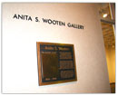

VISUAL ARTS PROGRAM
Housed on Valencia's East Campus, the visual arts complex includes spacious studios for drawing, painting, design, printmaking studio with darkroom facility, ceramics studio, sculpture studio, and outdoor patio for ceramics and sculpture. Students in the visual arts area develop fundamental skills in drawing, painting, design, printmaking, photography, ceramics, and sculpture. Adding a vital dimension to the students visual education are the visiting artists who offer lectures, hold workshops, and conduct demonstrations.
Valencia's Anita S. Wooten Gallery provides changing exhibits featuring Local, National and Internationally known artists, and annual exhibits such as The Juried Student Exhibition, Selected Faculty Exhibition, and Graphics Faculty Exhibition.
DEGREE OFFERED:
Associate in Arts Degree- Pre-Major: Art, Studio/ Fine Art
View the Visual Arts Degree Requirements
 Download Adobe Reader
Download Adobe Reader
VISUAL ARTS COURSES OFFERED:
DRAWING I & II
PAINTING I & II
DESIGN I & II
PRINTMAKING I & II
PHOTOGRAPHY I & II
CERAMICS I, II, & III
SCULPTURE I & II
LIFE DRAWING
SELECTED TOPICS COURSES:
PORTRAITURE
LANDSCAPE PAINTING
ART WITH A CAMERA
PORTFOLIO PREPARATION
FINANCIAL AID AND SCHOLARSHIPS
Scholarships for visual art students are given each year. These are based on merit from a portfolio submission and may be granted in addition to other financial aid.